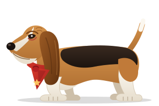

01First start-up
At the first start-up Dijana, our basset hound, wakes up and pricks up her ears. She takes you through five short choices. None of them is final: you can change everything later in Settings, with one click and without losing any data.
- Language and script. English (UK or US) or Serbian (Latin or Cyrillic script). You can change the language at any time and your documents stay the same.
- Who uses the computer. Add yourself to the Household. For a child, choose the Kids' room: Dijana is more present there, and help is set to "Hint" by default.
- Easy or Pro. In Easy mode things have everyday names (Desk, Folder, Bin). In Pro mode you see the technical names and more tools. You can switch whenever you like.
- Layout. Neo (the default), Bar (for people coming from Windows), Harbour (for people coming from a Mac) or Easy (children and beginners). Details are in chapter 5.
- First steps. A 15-minute guided tour. You can skip it and start it later from the Neo menu.
After that you see the "What are you doing today?" screen: large tiles with your tasks and recent documents. On the first day it shows examples: "Write a letter", "Look at photos", "Send an email".

In your first week you get one small task a day (one of them is a typing game). You can skip any of them. If you don't need a tip, click "I don't need this" and that kind of tip is switched off for good.
Start-up, Nap and Good night
Neo never asks you to save anything before switching off. Nap puts the computer to sleep, Good night shuts it down. Both are in the Neo menu (the ◆ mark at the top left). At the next start-up the Desk is exactly as you left it: the same documents, the same windows, the same cursor position.
02The Desk and the Neo menu
The Desk is your desktop: you work on it and leave things on it. Neo has no single big Start menu. Its job is shared between four clear places, and each does one thing.
we're coming for lunch on Saturday…
| I want to… | I go to | Where it is |
|---|---|---|
| start a program or open a document | Shelves (and the Bar, which is a kind of shelf) | at the bottom, or along any edge |
| find anything by typing | The command palette | Neo+Space or the Jump key, from anywhere |
| see recent items, switch off, open tiles | The Neo menu | the ◆ mark on the left of the menu bar |
| see what is running now | The Caretaker | on the right of the menu bar, or in the Bar |
Everyday names
In Easy mode you see names that need no explanation. In Pro mode the same places have technical names, and scripts use those.
| Easy | Pro | What it is |
|---|---|---|
| Desk | desktop | where you work and leave things |
| Folder | folder | papers in a folder |
| Letterbox (UK) / Mailbox (US) | downloads | everything that arrives from outside |
| Bin (UK) / Trash (US) | deleted items | things come back until you empty it |
| Toolshed | Apps: | programs |
| Notepad | RAM: | scrap paper for quick notes, cleared when you switch off |
| Worktable | RAD: | a fast disk in memory that survives a restart |
| Templates | Pads: | ready-made sheets for new documents |
| Keys | permissions | a program gets a key only from you |
| Back to yesterday | Chronos | takes the system back to an earlier state and says exactly what it does |
03Working with documents
On Neo you work with documents, and programs stay in the background. You don't start "a word processor"; you tear a new sheet off a pad.
A new document everyone
Open Templates (Pro: Home:Pads) and double-click Letter, Invoice, Household budget or School project. The new sheet gets a name and date and lands in the right place.
No Save button everyone
Everything saves itself, with its undo history. Close the window and the document stays exactly as it was, with the cursor in the same place.
Set aside everyone
The document shrinks to an icon on the Desk and stays "open". A hollow icon means the document is open; double-click it to bring it to the front.
Tasks adults and Pro
The Tasks menu (next to the Neo menu) keeps a piece of work together: "Tax return 2027", "Dissertation". Switching to a task brings back all its documents, windows and notes as you left them.
Delete without fear children
Neo doesn't ask "Are you sure?". It deletes straight away and a strip appears at the bottom: "Deleted. Undo". The Bin keeps everything until you empty it.
The Jump key Pro
Hold Jump and type a word: the cursor leaps straight to it, forwards or backwards, in a document or a list.
If you remove a USB stick or cartridge while documents from it are open, they save themselves and close neatly. Put it back and they open again in the same places. No error message.
04Neo+Space: the command palette
The fastest way to anything. Press Neo+Space (or hold Jump) and start typing. The palette finds programs, files, settings, commands and Lux recipes, all in one place.
| Type | What happens |
|---|---|
| quill | opens Quill (writing) |
| photos summer | finds your summer photos; Dijana "sniffs" while it searches |
| brightness | opens the screen brightness setting |
| > List Home: | runs a Neo DOS command; a short result fits in a balloon, a long one opens a Shell |
| weather london | adds a Weather tile for London |
People coming from Windows also have a Neo button at the bottom left of the Bar: it opens the same Neo menu, with this same palette and a search field underneath.
05The Bar and layouts
The Bar is the taskbar. It has three sections that never mix: on the left the Neo button and pinned programs, in the middle the open windows, on the right the small tile faces and the clock. It can sit along any edge, separately on each screen, and can hide itself.
How the Bar looks
Silver
Opaque and bevelled, in the spirit of Mac OS 8 and 9. The default in the Retro style.
Glass
Transparent, blurring what is underneath. It takes its colour from the wallpaper. Goes with the Future Shock style.
Classic
A grey bevelled bar like the office computers of the 1990s. Goes with pixel icons.
Crystal
The crystal frame from the third style, optional.
Glass turns opaque by itself on battery, at the Calm level, in the Contrast theme and when you switch on "Reduce transparency". On Neo Boing Platinum OS Lite, Neo 100 and Revive computers the Bar is always opaque, so older graphics chips don't do needless work.
Layouts
Pick a layout in Settings › Appearance › Layout. They all use the same Shelves, tiles and Neo menu, so you lose nothing when you switch.
| Layout | Top | Bottom | For whom |
|---|---|---|---|
| Neo | the menu bar with the Neo menu and the Caretaker | a Shelf with live tiles | everyone; closest to the classic Mac |
| Bar | the menu bar | the Bar with the Neo button, windows and clock | people coming from Windows |
| Harbour | the menu bar | a centred Shelf that magnifies icons under the pointer | people coming from a Mac |
| Easy | a menu bar with fewer items | a large Shelf with six things and the clock | children, beginners, the Large profile |
On a touch screen (or when you detach the Neo 500 keyboard) the Bar becomes the Open view, with live cards for your programs.
06Tiles
A tile is a small program everyone needs: a clock, a calendar, a note. Each tile has three faces, and the face depends only on where you drop it.
Small face
One line, like an icon. Lives in the Bar, on a Shelf and in the menu bar. Here the Meter shows two thin bars: processor and memory.
Large face
A square on the Desk, on a side shelf or on the "What are you doing today?" screen. Here the Meter has two dials with hands.
Window
Double-click any face. The Meter becomes the full "Under the bonnet": every core, memory, network, temperature.
Tiles in this version
| Tile | What it does |
|---|---|
| Clock | analogue or digital, several time zones, alarm, stopwatch, countdown; the face is chosen like a skin |
| Calendar | the month at a glance, today's appointments and public holidays |
| Meter | processor, memory, graphics, FPGA core, RAD:, network, temperature |
| Notes | sticky notes; the palette finds them too |
| Weather | the forecast for a place you type in, with no location tracking |
| Battery | Neo 500, headphones and a paired phone |
| Calculator | standard, scientific and programmer (hex, binary), with history |
| Disk | free space and how much crunching has saved (chapter 10) |
How to add a tile
- Open the Neo menu ◆ and choose Tiles…
- Drag the tile where you want it: onto the Desk, a Shelf or the Bar. While you drag it, you see the face it will have there.
- Hold Shift while dragging to make a copy, for example two clocks for two time zones.
Tiles on the Desk snap together edge to edge. In Easy mode you can't lose them by accident: the Bin brings them back, and the Neo menu has "Put my tiles back as they were".
Tiles have no adverts, never push news at you and show no red badges. The News tile shows only sources you picked yourself. Every tile asks your permission before it goes online for the first time.
Pro You can write your own tile in Lux or Neo BASIC, in about ten lines. Neo School has a lesson called "Make your own clock".
07Neo DOS
Neo DOS is Neo's command line, in the spirit of AmigaDOS. Commands are whole words, arguments have names, and errors are explained in plain language. The Desk and Neo DOS are two equal faces of the same system.
| How to open it | What you get |
|---|---|
| Neo+Enter or Neo menu › New Shell | a Shell, the Neo DOS window |
> in the command palette | a single command, with no window |
| Neo+Esc | a full DOS screen under the Desk; the same key brings the Desk back |
| the D key at start-up | starting without the Desk, for repairs and servers |
1.Home:> List Documents SINCE yesterday Letter to Gran 4 KB today 08:02 Household budget 2026 18 KB yesterday 21:40 1.Home:> Copy FROM Pictures/#?.jpg TO Archive: ALL Copied 214 files (1.2 GB). 1.Home:> Copy ? FROM/M/A,TO/A,ALL/S,QUIET/S 1.Home:> Help Copy Copy copies files and folders. ALL includes subfolders.
Commands
| Command | What it does |
|---|---|
| Dir | a short listing of a folder |
| List | a listing with size and date; SINCE yesterday for recent files |
| Copy | copies; ALL includes subfolders |
| Delete | sends to the Bin; gone for good only with FOREVER |
| Rename | renames or moves |
| MakeDir | makes a folder |
| Type | shows the contents of a text file |
| Search | searches for text in files |
| Info | disks and free space |
| Assign | makes your own logical name: Assign Work: Home:Company/2026 |
| Run | starts a program in the background |
| Execute | runs a script |
| Crunch / Decrunch | crunching (chapter 10) |
| Help | help for any command: Help Copy |
| Which | tells you which technical command a name stands for |
| LoadDesk / EndDesk | starts and stops the Desk; LoadWB works too, out of habit |
Commands in your language
Technical names are the same in every language, so a script written in Belgrade runs in London and the other way round. Each language pack adds its own synonyms for the commands and for template keywords such as FROM, TO and ALL. The Serbian pack, for example, adds Serbian words for Copy, List, Delete, Assign, Run, Crunch and Decrunch, in both Latin and Cyrillic script. Which always tells you which technical command a synonym stands for.
Good to know
- Templates: a
?after a command shows which arguments it takes and asks for them one by one. - Patterns:
#?means "anything",?one character,~(…)"everything except". - Pipes:
Dir Home: | Search "invoice". History and completion work with the Tab key. - Errors: each one has a code (for example
NEO-FS-017) and a Why? button that explains what happened.
The Translator for Linux Pro
Switch it on with Set Translate on or the button in the Shell. Before each command you see its exact Linux equivalent. It works the other way too: type ls -l and Neo suggests "On Neo: List. Run it?".
1.Home:> Copy FROM Pictures/#?.jpg TO Archive: ALL ↳ Linux: cp -r ~/Pictures/*.jpg /neo/Archive/
The Translator says "no exact equivalent" when there isn't one. You open a real Linux shell (bash, zsh or fish) with the Linux command. Children can take the course "The command line for children" in Neo School.
08Cabinet Pro: Duo and Magellan
The Cabinet is the file manager. It has three faces: the spatial Cabinet (every folder is a window that remembers its place), Easy views for beginners, and Cabinet Pro for people who work with files a lot. Cabinet Pro comes on in the Pro profile, or under Settings › Cabinet › Cabinet Pro.
Duo: two panels and a button bank
Duo is the retro layout of Cabinet Pro, modelled on Directory Opus 4 and Norton Commander. The left panel is the source, the right one the destination.
The basics
Tab switches the active panel. Select the files, then a button: the thing first, then the action, as everywhere on Neo.
Two actions per button
Left click "Copy", right click "Copy as…". A middle click shows which command the button runs.
Command line
Neo DOS sits under the panels. {selected} means the selected files, {other} the other panel's path.
Will it fit?
Before copying to a USB stick, cartridge or M-DISC, Duo tells you whether everything fits and how much space is left.
Folder buffer
Recent folders stay loaded, so going back is instant. Click the path to open the list.
Without the Desk
The same Duo runs as a text program on the DOS screen, for repairs and for Lite without the Desk.
The Magellan view: the Cabinet as a whole working environment
From Directory Opus 5 "Magellan" we take the ideas that make the Desk more powerful:
- A window that changes face: one key switches the same window between icons, a list, columns or a gallery. Two windows join into a Duo in one move.
- Floating banks: tear the button bank off the Duo and it becomes a Shelf on the Desk.
- Actions by file type: what happens on a double-click, a drag or a right click. Drop a PDF on the "Print" Shelf and it prints.
- The "Mine" menu: your own commands and scripts in the menu bar.
- Triggers: "when I plug in a USB stick with photos, offer to import them into Album", "when I drop a PDF into Invoices, crunch it and mark it Private".
- The network as a folder: FTP, SFTP, network drives, your phone and archives open like ordinary folders.
Pro Every button is one line of Neo DOS or a Lux script. Drag a command from the Shell onto a bank and it becomes a button. You can share banks, file types and triggers through Treasury.
09First Desk: the retro theme
First Desk is a theme in the spirit of the first graphical computers of 1983: black and white, one bit per dot, with dot patterns instead of greys. The drawings, lettering and sounds are our own, made for Neo.
Ring Gran at 6 pm.
- Open Settings › Appearance.
- Choose the Retro style, then the First Desk theme.
- If you like, switch on the mechanical sound set: relay clicks, a whirring disk and a short beep.
- If you like, switch on rectangular pixels: the Desk at 720 × 364, with pixels taller than they are wide, as on the original.
First Desk is the lightest theme of all, so it runs very well on Neo Boing Platinum OS Lite and older computers. Latin and Cyrillic script both have their own bitmap font.
10Crunch: smaller programs and data
On the Amiga, programs such as Imploder "crunched" files so they would fit on a floppy. Neo does it by itself, for you. Programs and documents take up about 30 to 50% less space, and you still work with ordinary files.
- You don't have to do anything. Programs from Treasury arrive already crunched, and documents are crunched by the file system.
- The "Crunch" button on the Disk tile re-crunches bigger folders at a stronger level, in the background, only while the computer is on mains power. Progress shows as calm coloured stripes.
- Per folder: right click › Info › "Crunch: no, fast, strong, strongest".
- From Neo DOS:
Crunch Home:Archive LEVEL 19 ALL, andDecrunchundoes it.
Photos, video and music are already compressed, so Neo leaves them alone. When you copy to a USB stick or send by email, the file goes as an ordinary file and opens on any computer.
Archives
The Cabinet opens ZIP, 7z, RAR (unpacking only) and other archives like ordinary folders. For sharing it makes ZIP or 7z. For archives kept long term (M-DISC, USB) Neo adds a PAR2 recovery record by itself, so a damaged archive can be repaired.
11Your phone and Neo
Your phone and Neo work together with no account and no cloud, only over your home network or Bluetooth. Everything stays off until you pair a phone yourself.
- Install KDE Connect on your phone (Android or iPhone). For sending files, LocalSend works too.
- On Neo, open the Tether program (palette:
tether). - Pick your phone from the list and confirm the same number on both screens.
- Switch on only what you want. Each feature has its own switch.
| Feature | Android | iPhone |
|---|---|---|
| Tether: notifications, clipboard, SMS, remote input, battery, "find my phone" | yes | partly |
| Pass to a neighbour: sending files, like AirDrop | yes | yes |
| Synced folders: photos from your phone arrive by themselves | yes | through extra apps |
| Phone in a window: your phone's screen on Neo, its camera as a Neo camera | yes | no |
| Calls through the computer's speaker and microphone | yes | yes |
| Calendar and contacts in Diary | yes | yes |
An iPhone can do less because Apple does not open up messages or deeper access. Your phone's battery also shows on the Battery tile, and all of this works on Neo Boing Platinum OS Lite too.
12Shortcuts
| Keys | What they do |
|---|---|
| Neo+Space | the command palette: find anything |
| hold Jump and type | the cursor leaps to the text |
| Neo+Enter | a new Shell (Neo DOS) |
| Neo+Esc | the DOS screen under the Desk, and back |
| D at start-up | start without the Desk |
| Move, Copy, Properties, Again, Undo | the universal keys on the function row; they work the same on a file, a sentence, a cell and a window |
| Shift + dragging a tile | a copy of the tile |
| Tab in Duo | switches the active panel |
| F3 … F10 in Duo | View, Edit, Copy, Move, New folder, Delete, Quit |
| middle click on a line of text | runs a Neo DOS or Lux line from a note |
13When something goes wrong
A program has frozen
Open the Caretaker (on the right of the menu bar) and close it. Other programs and the Desk carry on.
A tile has gone grey
Neo is restarting it; the grey frame stays until it is back. You don't need to do anything.
A message with a NEO code
Dijana explains what happened and what you can do. Note the code (for example NEO-FS-017) if you report a bug.
Something broke after a change
Neo menu › Back to yesterday takes the system back to an earlier state. Your documents stay.
The wrong file was deleted
Click "Undo" on the strip at the bottom, or open the Bin. In Neo DOS, Delete also goes to the Bin.
I can't find a file
Press Neo+Space and say "Dijana, sniff out…". She tells you where the file is and when it was last seen.
14Tell us
The beta is here so we can find together what is wrong before release 1.0. What helps us most:
- What you wanted to do, what you did and what happened.
- The error code NEO-XX-NNN, if there was one.
- Your computer: Neo 500, 2000, 4000, Neo 100 or Revive, and whether it runs full Neo Boing Platinum OS or Lite.
- Where this manual confused you. That is a bug too, just in the text.
The yardstick before 1.0 is simple: a new user should send an email, write a letter and find a photo in their first 10 minutes, with no manual. If it takes you longer, tell us.